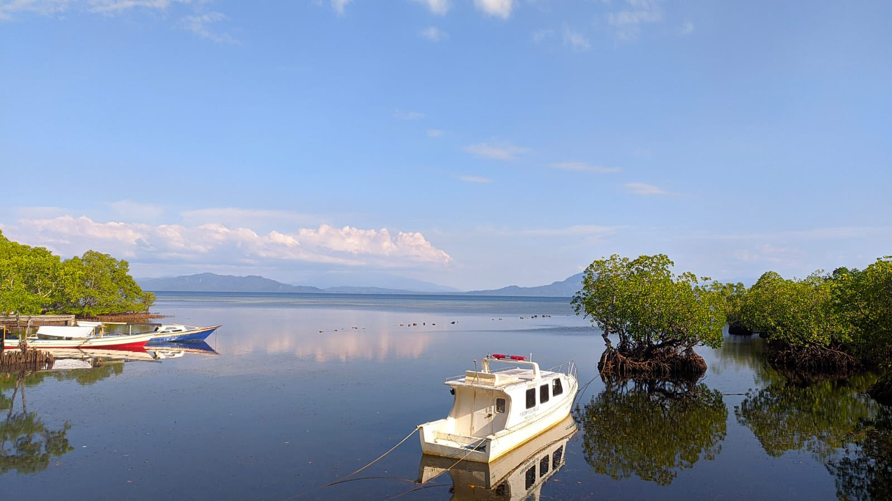
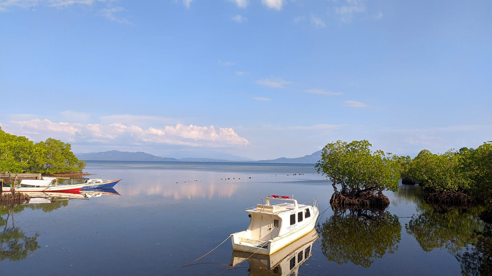

Homepage
Selamat datang di website saya! Saya senang Anda berada di sini.
Di sini Anda dapat menemukan berbagai informasi menarik tentang seni, olahraga, dan teknologi.
Nama Saya Leandro Rumondor, Mahasiswa IT Unsrat, Saya Suka Dengan Pemandangan.
Blog
Teknologi: Perkembangan Terbaru dalam Dunia Teknologi
Teknologi terus berkembang pesat dan memiliki dampak besar dalam kehidupan kita sehari-hari. Artikel ini membahas beberapa perkembangan terbaru dalam dunia teknologi, seperti kecerdasan buatan, kendaraan otonom, dan Internet of Things. Teknologi kecerdasan buatan (AI) telah menjadi bagian integral dari banyak aspek kehidupan kita. Dari asisten virtual hingga mobil otonom, AI terus memperluas pengaruhnya. Sementara itu, kendaraan otonom semakin mendekati kenyataan, dengan perusahaan-perusahaan besar seperti Tesla dan Google terus mengembangkan teknologi ini. Internet of Things (IoT) juga mengubah cara kita berinteraksi dengan dunia sekitar kita, dengan rumah pintar, kota pintar, dan perangkat lainnya yang terhubung secara online.
Sejarah Kemerdekaan Indonesia: Perjuangan Menuju Kemerdekaan
Sejarah kemerdekaan Indonesia merupakan perjalanan panjang dan penuh perjuangan. Artikel ini mengupas tentang peristiwa-peristiwa penting dalam perjuangan menuju kemerdekaan Indonesia, termasuk proklamasi kemerdekaan pada tanggal 17 Agustus 1945. Perjuangan kemerdekaan Indonesia tidaklah mudah. Dari penjajahan Belanda yang panjang hingga perjuangan para pahlawan nasional seperti Soekarno dan Hatta, setiap langkah menuju kemerdekaan dipenuhi dengan pengorbanan dan perjuangan. Artikel ini menghormati dan mengenang perjuangan para pahlawan yang telah berjuang keras untuk memperoleh kemerdekaan bagi bangsa Indonesia.
Musik: Pengaruh Musik dalam Kehidupan Manusia
Musik memiliki peran yang penting dalam kehidupan manusia. Artikel ini membahas tentang pengaruh musik dalam berbagai aspek kehidupan, mulai dari pengaruhnya terhadap suasana hati hingga peran musik dalam industri hiburan. Musik telah dikenal memiliki kekuatan untuk mempengaruhi suasana hati dan emosi. Dari musik klasik yang menenangkan hingga musik rock yang energik, setiap genre memiliki dampaknya sendiri pada pendengarnya. Selain itu, musik juga memainkan peran penting dalam industri hiburan, dengan konser, festival musik, dan penjualan rekaman yang menjadi bagian integral dari budaya populer.
 
